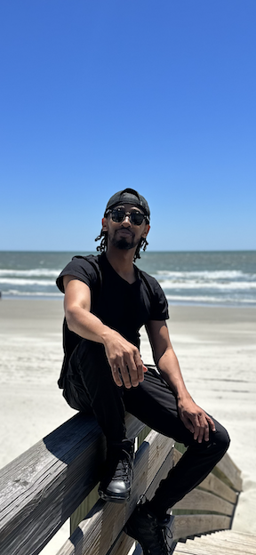
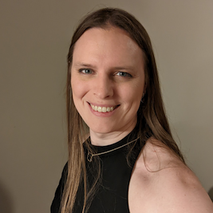
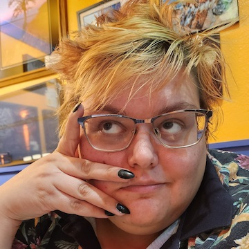
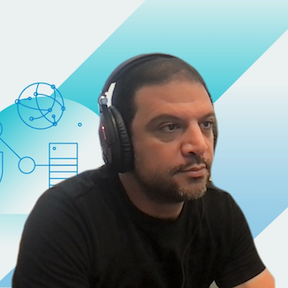

Alex Ewings My name is Alex Ewings, throughout college I changed my major about 5 times before deciding on pursuing a career in IT. I now have over 9 years of experience across several different information technology roles (primarily on the platform side of IT). I'm currently a Solutions Architect, with a focus on Kubernetes, observability/monitoring, CI/CD, and computer infrastructure. My favorite things to work on are Kubernetes and building intuitive dashboards through Grafana/Prometheus. Outside of work I enjoy tinkering on my car, flying general aviation aircraft recreationally, traveling (going to different beaches), exercising and helping struggling nonprofit companies with different IT related issues theyre dealing with.


Overview
Habibi Code hosts a mentorship program with three-month long mentorship cycles for individuals who identify as a minority in the tech industry (women, BIPOC, Latinx, LGBTQ+ individuals, formerly incarcerated, low socio-economic background, non-traditional educational background, etc). As a participant in this program, you will get one on one time with mentors that can be used in whatever ways best suit your needs. You can read more about the program, as well as our mentors, below!
Applications for the Summer 2023: July - September cycle are closed.
Important Dates
- May 17, 2023: Application form closes.
- May 28, 2023: Applicants notified of interview decision.
- Jun 11, 2023: Interviews end.
- Jun 16, 2023: Applicants notified of final decision.
- Jul 01, 2023: Mentorship cycle begins!
- Sep 31, 2023: Mentorship cycle ends.
Program
You can use this program for whatever best suits your needs, including but not limited to:
- Advice and guidance on education
- Advice and guidance on career
- Resume review
- Brainstorming support (technical or product)
- Interview prep
- Support in learning a new tool or technology
- Reviewing and further exloring computer science and/or software engineering concepts
- Troubleshooting, debugging, or code review (note: mentors will help point you in the right direction as opposed to providing a solution)
Current Mentors
Click on a mentor image to see their bio.
Carrie Wallace Carrie Wallace, graduated from Michigan with a degree in Classical Archaeology, took a 6 mo coding course and now work in Salesforce. Currently working on a Lightning Migration/CRM upgrade for NextGear Capital, a division of Cox Auto. I really love the flexibility Salesforce offers to all levels of tech understanding. I’m passionate about leading with compassion and understanding rather than micromanaging and fear mongering. Can’t wait to help someone transform their career the way I was able to!

Cole Wyman I studied Materials Science & Engineering and Computer Science at
University of Michigan for a few years before deciding to leave college and begin working. I
bopped around between freelance jobs doing frontend and mobile web development to varying
degrees of success before finally landing my first software engineering role at a consultancy.
In the years since, I’ve been able to grow a lot in my role and hone my skills in distributed
systems, code cleanliness, and frontend development.
As someone whose career was made possible by the willingness of my friends and colleagues to give
me a chance despite a lack of formal accreditation, mentorship has always been an important means
for me to give back to the community and lift up other talented, hard-working individuals that
haven’t had that same fortune of circumstance. I believe anyone with drive and desire can succeed
in this field and I hope to be able to help elevate new technologists in their career goals.
Outside of work, I’m a fan of food, artsy stuff, and comedy. As a Detroiter living in NYC, I have
great access to all three, and I love getting the chance to bring my friends and family around
for Broadway shows and Korean BBQ.

Diana Richardson Diana Richardson, University of Mississippi - Management Information Systems, Management, Computer Science. Senior level product/project manager with experience as BA, QA. Currently working as Principal Technical Product Manager - creating next gen applications and managing team success. Interested in employee volunteerism and charitable contributions, giving back. Wife, Mother to many tiny humans, I do CrossFit occasionally
Elise Griffiths Hi, I'm Elise! I was one of those kids who went through a bunch of different majors in college, settled on Mechanical Engineering, and then wound up back in software somehow! I was recently promoted to manage a software engineering team called FordLabs (check us out! www.fordlabs.com). These days I'm still working on learning about the usual things that come with management, leadership strategies, a bit of bureaucracy, and figuring out how to best help my team. When I get to jump in the code, I love experimenting with little ideas that can help make the big idea go. Sometimes I just experiment with huge ideas for the fun of it. On my off time I love getting out and doing things. I have niche hobbies like ballroom dance and speedskating, but also enjoy more typical things like art, running, and watching sports (go blue!).

Ellis Parker (they/them/theirs) - Education: M.S. from Wayne State in Computer Science/Artificial
Intelligence; B.S. from Eastern Michigan University in Computer Science Career: Current Software
Developer at General Motors (since 2019) in Financial Analytics IT Working on: An application for
transactional level forecasting - I design and build databases Interested in: AI, data science,
machine learning, SQL, DEI, community volunteering Likes: Music, food, drag, matcha lattes Dislikes:
Dunkin Doughnuts, transphobia, bad drivers

Jaimie Black My name is Jaimie (they/them!) and I am a self-taught backend developer with about 2 years of work experience. Currently, I build Python microservices. I do a lot of API design and documentation work as well-- good documentation is a HUGE passion of mine! On the side, I do the occasional fullstack project, so I know my way around CSS and Javascript.

Samah Majadla I have a Bachelor of Arts in Computer Science and Studio Art, and
Masters of Science in Computer Science. I am a Product Manager at VMware, where I help clients
with implementation and maturation of their cloud infrastructure. I am currently working on a
full-stack application for Prison Books Collective, a non-profit that sends free books to
individuals incarcerated in North Carolina and Alabama; the app is being developed using Java,
Spring Boot, Hibernate/JPA, MySQL, SvelteKit, HTML, Javascript, and CSS.
You can learn more about my background here.
In my free time, I like to make things (robotics, beaded jewelry, nails), being active (paddleboarding, going to the ocean, hiking, exploring cities, dancing, kickboxing), and spending time with those I love.
You can learn more about my background here.
In my free time, I like to make things (robotics, beaded jewelry, nails), being active (paddleboarding, going to the ocean, hiking, exploring cities, dancing, kickboxing), and spending time with those I love.

Qualifications
In order to qualify for this opportunity, you should:
- Identify as a minority in the tech industry.
- Be able to commit to meeting for 30 minutes every two weeks, and 45 minutes every month.
Expectations and Further Details
If you are chosen to be a part of this program, you are expected to commit to the following:
- 1:1 meeting every 2 weeks (half hour)
- You are encouraged to join the two Panel and Q&A style group meetings (45 minutes, dates TBD)
You will also be invited to join all of our Habibi Code events. Other information:
- You will coordinate with your mentor on your meeting times.
- You will have access to private channels to communicate with your mentor and the mentorship community.
Interested? Application and Next Steps
Applications are closed for the Summer cycle.
Past Mentors
Click on a mentor image to see their bio.
Spring 2023
Amber Salome
Spring 2023 My name is Amber Salome and I am based out of Chicago, Illinois. I studied Computer Science and Biology at Kalamazoo College, and focused on the intersection of these two fields. After college I spent a year as a software engineer, then transitioned to being a Solutions Architect. I now focus on observability/monitoring, devops, and computer infrastructure. My favorite things to work on are kubernetes/helm and building intuitive dashboards. In my free time I love riding my bike and cooking new recipes!
Spring 2023 My name is Amber Salome and I am based out of Chicago, Illinois. I studied Computer Science and Biology at Kalamazoo College, and focused on the intersection of these two fields. After college I spent a year as a software engineer, then transitioned to being a Solutions Architect. I now focus on observability/monitoring, devops, and computer infrastructure. My favorite things to work on are kubernetes/helm and building intuitive dashboards. In my free time I love riding my bike and cooking new recipes!

Winter 2022
DeShayla Cisero
Winter 2022 I have a Bachelor of Arts in Communication and Marketing, certified Software Developer (Java), and Certified Scrum Product Owner. I am a professional Coach and Owner of Joy Code and an Agile Product Manager. Currently interested in growing my knowledge and skills in Artificial Intelligence and learning new ways tech can improve our quality of life. Passionate about leaving people greater than I found them!
Winter 2022 I have a Bachelor of Arts in Communication and Marketing, certified Software Developer (Java), and Certified Scrum Product Owner. I am a professional Coach and Owner of Joy Code and an Agile Product Manager. Currently interested in growing my knowledge and skills in Artificial Intelligence and learning new ways tech can improve our quality of life. Passionate about leaving people greater than I found them!

Spring 2023
Grace Wingo
Spring 2023 grace wingo currently works as a software engineer at Vox Media where they work primarily on ad tech. they have a masters in educational psychology and a b.a in theatre. in their free time they enjoy playing guitar, running, reading, hiking, and exploring new places and meeting new people. they're passionate about inclusion, slow living, and rest.
Spring 2023 grace wingo currently works as a software engineer at Vox Media where they work primarily on ad tech. they have a masters in educational psychology and a b.a in theatre. in their free time they enjoy playing guitar, running, reading, hiking, and exploring new places and meeting new people. they're passionate about inclusion, slow living, and rest.

Winter 2022
Supraja Kalva
Winter 2022 Supraja (she/her/hers) graduated from Eastern Michigan University as a Presidential Scholar with a Bachelor of Science in Computer Science (Applied) and Neuroscience Interdisciplinary, along with University Honors, Departmental Honors in both majors, and Highest Honors. She is currently working at General Motors as a Speech Certification Test Engineer. She is very interested in the neurotechnology and neuroengineering space, hoping to get a PhD in the related fields in the future. She loves hiking, learning about new cultures and languages, and a fellow art enthusiast.
Winter 2022 Supraja (she/her/hers) graduated from Eastern Michigan University as a Presidential Scholar with a Bachelor of Science in Computer Science (Applied) and Neuroscience Interdisciplinary, along with University Honors, Departmental Honors in both majors, and Highest Honors. She is currently working at General Motors as a Speech Certification Test Engineer. She is very interested in the neurotechnology and neuroengineering space, hoping to get a PhD in the related fields in the future. She loves hiking, learning about new cultures and languages, and a fellow art enthusiast.

Winter 2022, Spring 2023
Vaughn Walker
Winter 2022, Spring 2023 Career background: I have 4 years of engineering experience with the last 3.5 years at the company Integral. My current role is senior software engineer. I've spent the majority of my time doing projects related to the automotive space. Outside of that, I have a side business of selling printed product labels which is adjacent to my old line of work in the printing industry where I spent 14 years operating a printing press before making the career switch to IT.
When I'm not working I enjoy spending time with my family, riding my one wheel, traveling, and building my new vinyl record collection.
Winter 2022, Spring 2023 Career background: I have 4 years of engineering experience with the last 3.5 years at the company Integral. My current role is senior software engineer. I've spent the majority of my time doing projects related to the automotive space. Outside of that, I have a side business of selling printed product labels which is adjacent to my old line of work in the printing industry where I spent 14 years operating a printing press before making the career switch to IT.
When I'm not working I enjoy spending time with my family, riding my one wheel, traveling, and building my new vinyl record collection.

Winter 2022
Vera Reynolds
Winter 2022 Hi! I'm Vera. I have a BA in Psychology and a BS in Computer Science. I've been a software engineer since 2012. Over the years I worked at a number of companies, from small consulting firms to large organizations. I currently work at a startup called Honeycomb that provides a monitoring platform for other software engineers. I'm very much a generalist when it comes to languages and frameworks, but my competency is mostly around web technologies. I'm interested in digital rights and privacy, open-source, and developer tooling. Oh, and cats :)
Winter 2022 Hi! I'm Vera. I have a BA in Psychology and a BS in Computer Science. I've been a software engineer since 2012. Over the years I worked at a number of companies, from small consulting firms to large organizations. I currently work at a startup called Honeycomb that provides a monitoring platform for other software engineers. I'm very much a generalist when it comes to languages and frameworks, but my competency is mostly around web technologies. I'm interested in digital rights and privacy, open-source, and developer tooling. Oh, and cats :)

Spring 2023
Wael Rabadi
Spring 2023 My name is Wael Rabadi and I've been in the software development professional track since for over 20 years. My current position is a Senior Technical Solution Architect at VMware. I focus on building business application that run on modern cloud native architecture. I focus on highly available and scalable solutions. I enjoy working on all aspects of the application and enjoy thinking about the process and logic. In my spare time, I enjoy looking into IoT and microprocessor programming.

Spring 2023 My name is Wael Rabadi and I've been in the software development professional track since for over 20 years. My current position is a Senior Technical Solution Architect at VMware. I focus on building business application that run on modern cloud native architecture. I focus on highly available and scalable solutions. I enjoy working on all aspects of the application and enjoy thinking about the process and logic. In my spare time, I enjoy looking into IoT and microprocessor programming.